Travail sédentaire
Le travail sédentaire prolongé est associé à une augmentation de 50 % des lombalgies et de 75 % des cervicalgies et douleurs aux épaules. Au-delà des TMS, il augmente les risques cardiovasculaires, métaboliques et de mortalité toutes causes. En ergonomie, "moins d'effort" ne signifie pas "mieux" : la sédentarité est devenue une contrainte à part entière, à laquelle on répond par l'alternance et l'aménagement.
Table des matières
- Contexte et statistiques
- Mécanismes physiopathologiques
- Aménagement du poste assis
- Posture debout statique
- Alternance assis-debout
- Effets cardiovasculaires et métaboliques
- Application terrain
- Ressources
Contexte et statistiques
{kind=link}
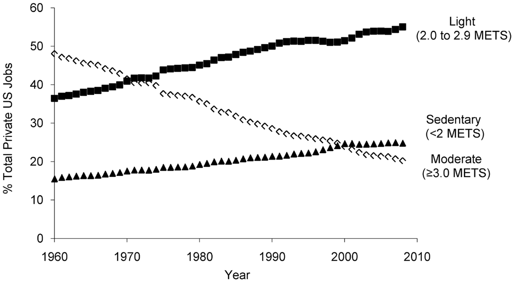
Toucher l'image pour l'agrandirLes dernières décennies ont vu
- Passage de 50 % à plus de 80 % des emplois peu ou pas physiquement exigeants.
- Passage de 50 % à 20 % des emplois physiquement exigeants.
- En moyenne, les travailleurs passent environ 80 % de leur temps de travail assis.
Conséquences sur les TMS
- ↑ 50 % de lombalgies.
- ↑ 75 % de cervicalgies et douleurs aux épaules.
Mécanismes physiopathologiques
Statisme
L'absence de mouvement génère plusieurs problèmes.
- Apport en eau, nutriments et oxygène aux disques intervertébraux par diffusion. La diffusion est favorisée par les mouvements et les variations de pression.
- Le statisme prolongé limite l'hydratation et l'apport en nutriments des disques (L4 et L5 particulièrement).
- À long terme, l'absence de mouvements favorise la dégénérescence des disques.
{kind=link}
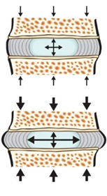
Toucher l'image pour l'agrandirTravail musculaire statique
Le maintien d'une posture exige inévitablement un travail statique. Même assis, le maintien postural requiert un travail musculaire (voir Système musculaire).
- Même des contractions aussi faibles que 2 % de la force maximale, prolongées, deviennent contraignantes.
- ↓ apport sanguin.
- Manque d'énergie, accumulation de sous-produits métaboliques.
- Fatigue, inconfort, apparition de points gâchettes (contractures musculaires hypersensibles).
{kind=link}
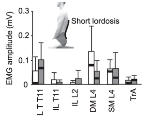
Toucher l'image pour l'agrandir{kind=link}
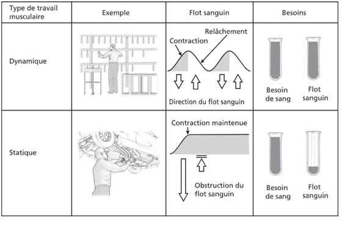
Toucher l'image pour l'agrandirDiminution de la lordose lombaire
En posture debout, la colonne présente une lordose lombaire dépendante de la position de la ceinture pelvienne
- Antéversion du bassin = ↑ lordose.
- Rétroversion du bassin = ↓ lordose.
La position assise entraîne une rétroversion du bassin, donc une perte de lordose et une cyphose lombaire.
{kind=link}
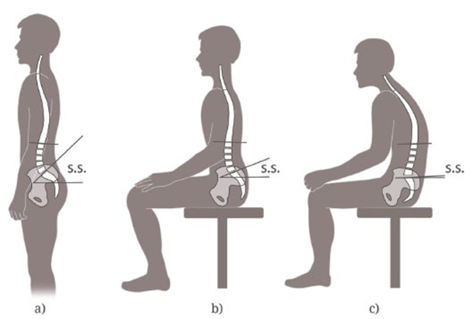
Toucher l'image pour l'agrandir{kind=link}
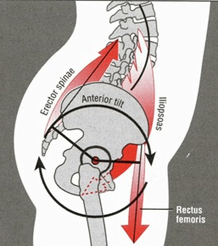
Toucher l'image pour l'agrandirCette cyphose
- Mauvaise distribution de la pression intervertébrale.
- ↑ tension ligamentaire, capsulaire, musculaire.
{kind=link}
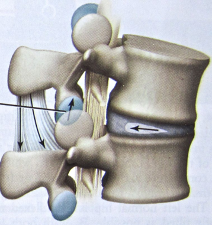
Toucher l'image pour l'agrandirS'asseoir droit sans support force une activité musculaire continue (lordose maintenue par les érecteurs du rachis). La solution est un bon support lombaire (profondeur d'environ 5 cm, positionné au niveau de la crête iliaque).
{kind=link}
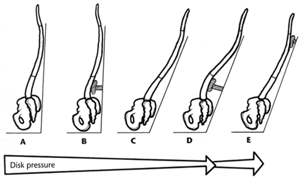
Toucher l'image pour l'agrandirDéséquilibre musculaire
La position assise place certains muscles en raccourcissement passif (ilio-psoas), avec à long terme
- Perte de flexibilité musculaire.
- Affaiblissement musculaire.
Aménagement du poste assis
Chaise ergonomique
- Assise réglable en hauteur et profondeur.
- Dossier avec appui lombaire réglable.
- Appuis-bras rembourrés, réglables.
Hauteur de l'assise
- Pieds au sol.
- Genoux à 90° (90° à 110°).
- Cuisses parallèles au sol.
Anthropométrie (creux poplités)
- Hommes : 44 cm (39 à 49).
- Femmes : 40 cm (35 à 45).
Profondeur de l'assise
Au minimum, 3/4 des cuisses supporté. Distance sacrum-creux poplité
- Hommes : 49 cm (44 à 55).
- Femmes : 48 cm (43 à 53).
Éviter la compression des creux poplités (environ 2 doigts d'espace).
{kind=link}
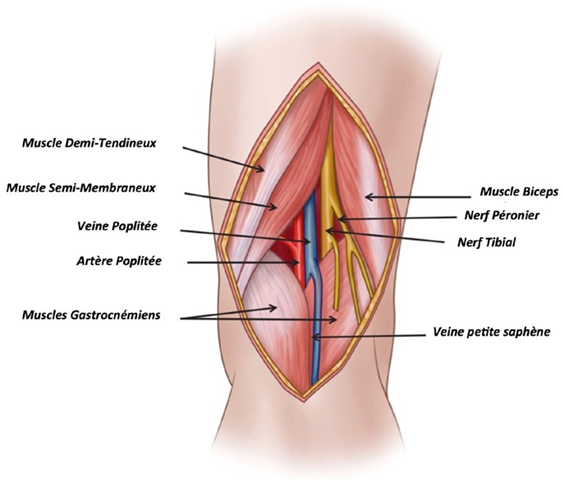
Toucher l'image pour l'agrandirHauteur et angle du dossier
- Doit supporter les scapulas.
- Angle 95° à 110° (5° à 20° d'inclinaison) : ↓ activité musculaire, ↓ pression intervertébrale.
{kind=link}
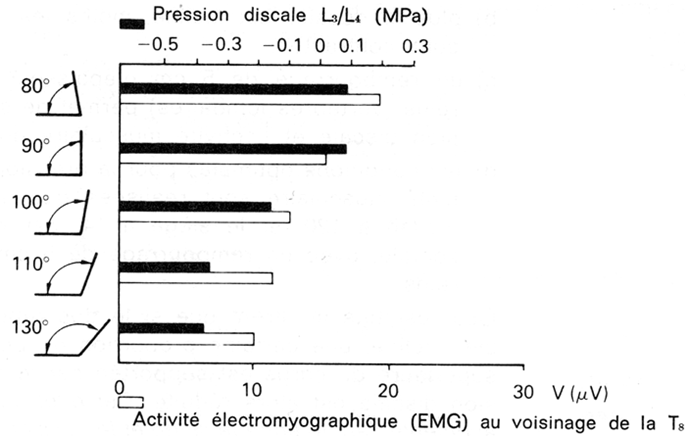
Toucher l'image pour l'agrandir{kind=link}
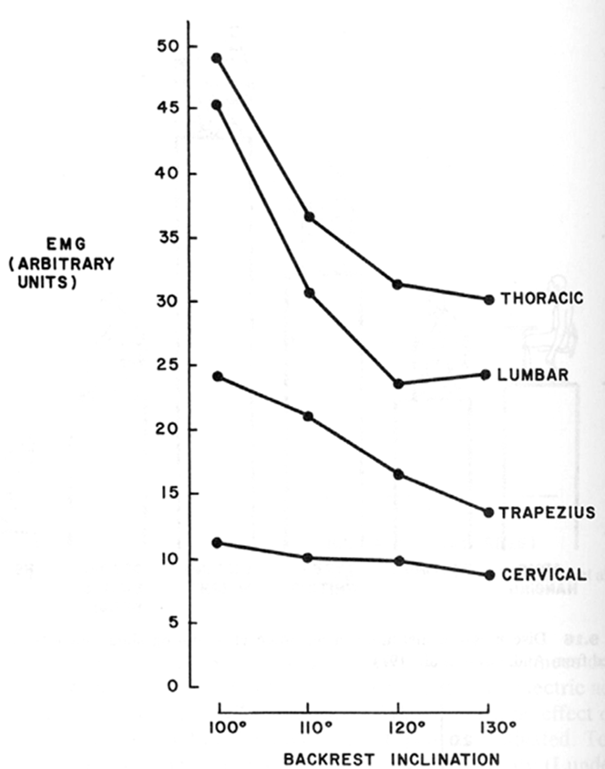
Toucher l'image pour l'agrandirAppuis-bras
- Avant-bras appuyés, coudes à 90°, épaules relâchées.
- Distance assise-coude : H 24 cm, F 23 cm.
- Placés près du corps pour minimiser les déviations ulnaires au poignet.
Hauteur du bureau
- Coudes (à 90°) à la hauteur de la surface.
- Hommes : 68 cm. Femmes : 63 cm.
Clavier, souris, écran
Clavier : centré, poignets en position neutre, inclinaison minimale.
Souris : même hauteur que le clavier, le plus près possible.
Écran
- Face à l'utilisateur (réduire rotation du cou).
- Partie supérieure à hauteur des yeux.
- Position neutre du cou si angle de vision < 30° sous l'horizontale.
- À distance d'un bras.
{kind=link}
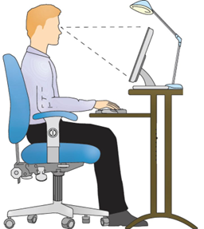
Toucher l'image pour l'agrandirPosture debout statique
Tenir debout statique n'est pas la solution. Associé à
- Risque de lombalgie (Articulations facettaires).
- Fatigue et douleurs musculaires.
- Nuisance à la circulation, varices.
Alternance assis-debout
L'alternance assis-debout réduit
- Fatigue musculaire.
- Douleurs musculosquelettiques.
- Lombalgies.
Implantation de postes assis-debout (Pronk et al., 2012)
- Réduction de 54 % des douleurs au dos et au cou.
- Réduction de 66 minutes de temps assis par jour.
Recommandations
| Posture | Limite |
|---|---|
| Assis | Max 30 minutes consécutives, problématique > 8 h / jour |
| Debout statique | Max 30 minutes consécutives, max 4 h / jour |
| Activité physique | Pauses actives 30 sec à plusieurs minutes, courtes périodes de marche, exercices, étirements |
{kind=link}
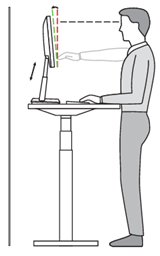
Toucher l'image pour l'agrandirAménagement bureau debout
- Bureau à hauteur des coudes (H 109 cm, F 100 cm).
- Écran à hauteur des yeux (H 163 cm, F 151 cm).
- Repose-pieds (↓ antéversion du bassin).
- Revêtement de sol non trop dur.
Effets cardiovasculaires et métaboliques
Au-delà des TMS, la sédentarité augmente
- Problèmes digestifs.
- Troubles vasculaires.
- Troubles métaboliques (obésité, diabète de type II, MCV).
Étude classique : conducteurs de trolleybus inactifs vs receveurs actifs, 42 % plus d'événements coronariens chez les conducteurs (Morris et al., 1958).
50 % plus de décès toutes causes confondues et liés aux MCV pour les temps assis prolongés (Katzmarzyk, 2009).
Application terrain
La sédentarité touche plusieurs postes en mine.
| Poste | Caractéristique |
|---|---|
| Opérateur de salle de contrôle (concentrateur) | Position assise prolongée devant écrans |
| Opérateur de pelle-treuil souterraine | Assis en cabine, manipulation de commandes |
| Conducteur de camion (surface ou souterrain) | Assis prolongé + Vibrations corps entier (cofacteur, voir Vibrations) |
| Personnel administratif, ingénieurs de mine | Bureau classique |
| Préposé au pesage, contrôleur de production | Assis prolongé |
Cofacteurs en mine
- Vibrations corps entier (camions, scoop) : combinent statisme et stress mécanique sur les disques.
- Sortie de cabine après période vibratoire : fenêtre de fragilité lombaire majeure.
- Quarts de 12 h : durée d'exposition cumulée plus élevée.
Leviers spécifiques
- Bureaux assis-debout dans les salles de contrôle.
- Pauses actives obligatoires en milieu de quart pour opérateurs assis.
- Sièges à suspension calibrés au poids pour les engins (voir Vibrations).
- Limitation des heures consécutives en cabine sans pause.
Ressources
| Document | Type | Source |
|---|---|---|
| Cours SST 1162 - S5 - Travail sédentaire | Cours | UQAT |
| Pronk et al., 2012 (postes assis-debout) | Article | Preventing Chronic Disease |
| APSSAP, recommandations 2022 | Guide | APSSAP |
| Ritchie et al., 2018 (chaises ergonomiques) | Norme | CSA Z412 |
Articles wiki connexes
Pages qui pointent ici (10)
- 🏠 Wiki Ergonomie, mines Ergonomie
- Anatomie et biomécanique du dos Ergonomie
- art-117-RSST Ergonomie
- art-117-RSST Hygiène industrielle
- Conception ergonomique des postes Ergonomie
- Contraintes Ergonomie
- Mobilier de bureau et santé SST psychosociale
- Sommeil et rythmes biologiques Ergonomie
- Système musculaire Ergonomie
- TMS par région anatomique Ergonomie